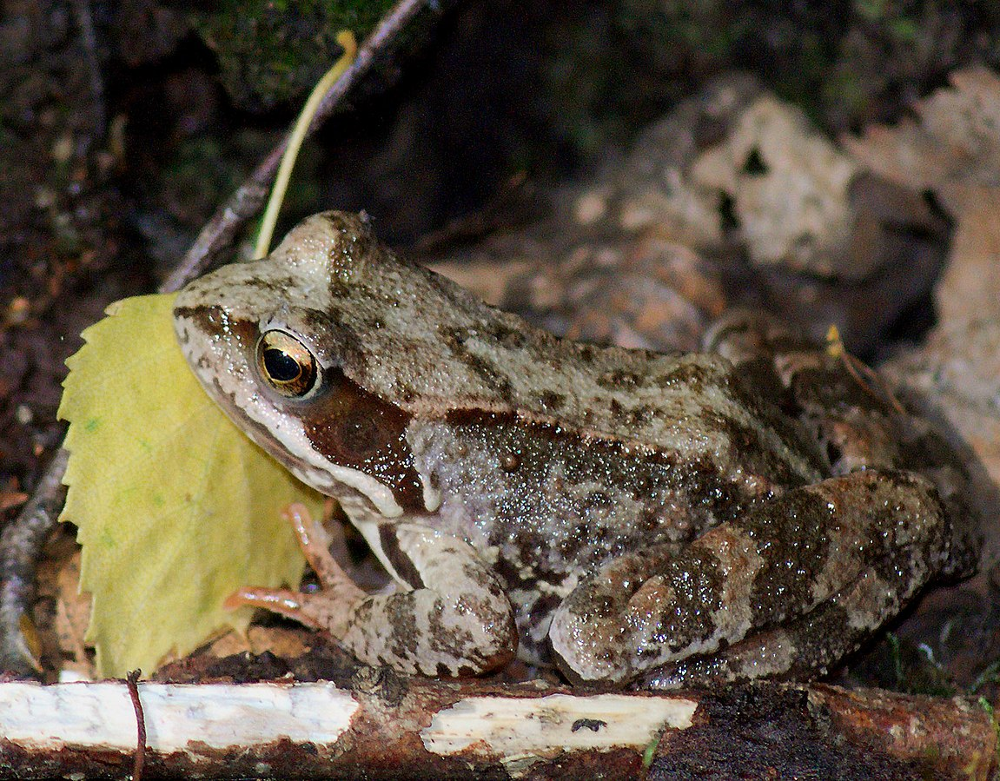
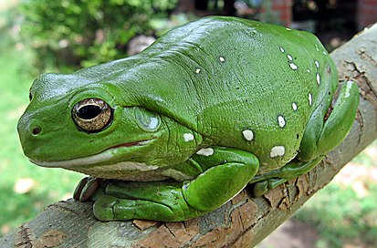
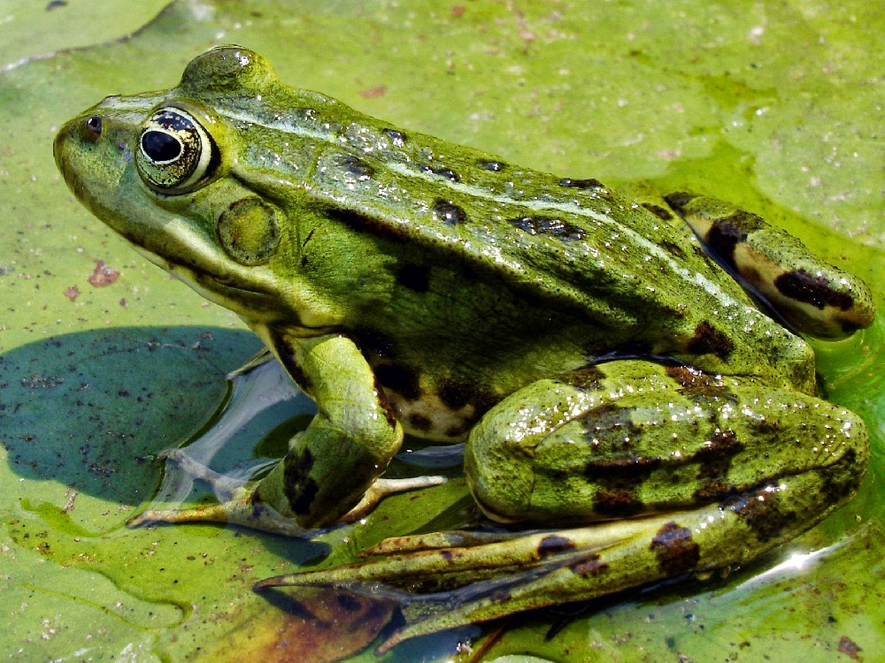
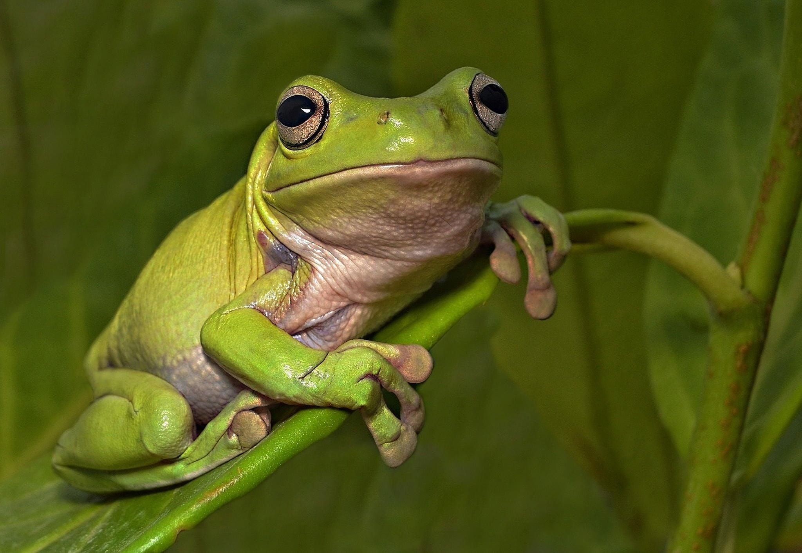
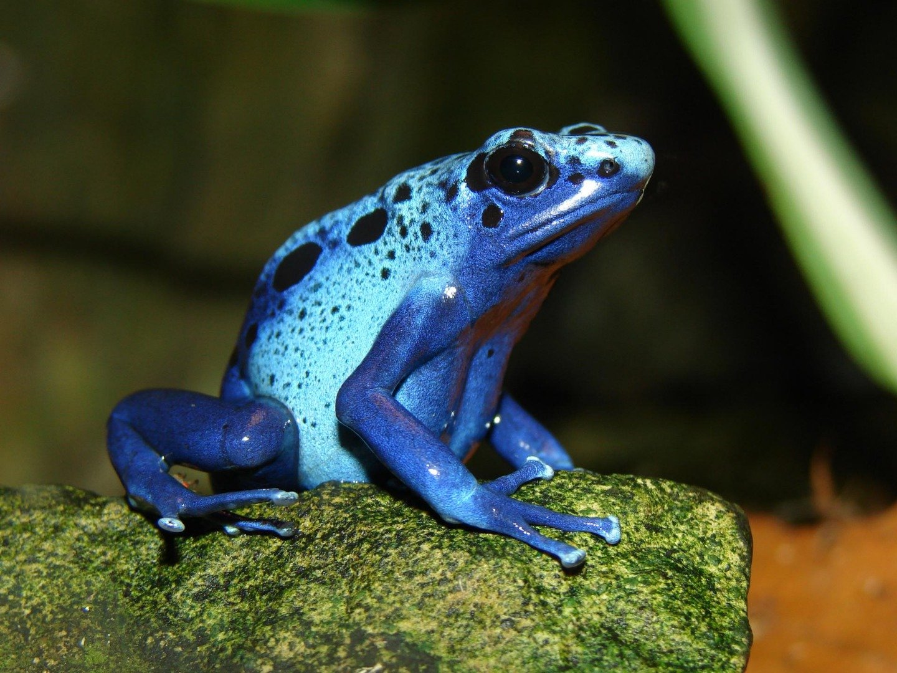

Остромордая лягушка
Длина тела 3,6—8,4 см, масса от 5 до 30 грамм. Морда более или менее заострённая. Голени в 1,9—2,6 раза короче тела. Если их расположить перпендикулярно к продольной оси тела, то голеностопные суставы соприкоснуться или перекроются. Если же заднюю ногу вытянуть вдоль тела, то голеностопный сустав достигнет глаза, ноздри, конца морды или даже несколько выйдет за него. На внутренней стороне задней стопы находится высокий пяточный бугор, в 1,1—2,3 раза короче первого пальца ноги. Кожа на боках и бёдрах гладкая.

Австралийская квакша
Общая длина представителей этого рода колеблется от 1,6 (Litoria microbelos) до 13,5 (Litoria infrafrenata) сантиметров. По своему строению похожи на представителей родов квакши и Dendropsophus. Отличаются отсутствием пигментации век и горизонтальной радужной оболочкой. Окраска большей частью тёмных цветов с разными оттенками. Встречаются в различных ландшафтах: лесах, полупустынях, холмах. Большинство ведёт наземный образ жизни. Некоторые виды значительную часть жизни проводят на деревьях. Питаются в основном беспозвоночными.

Прудовая лягушка
Длина тела прудовой лягушки редко превышает 8 см. Окраска спинной стороны обычно ярко-зелёная, серо-зелёная, оливковая или коричневая, с большим или меньшим количеством тёмных пятен, вдоль середины спины часто проходит узкая светлая продольная полоска, брюшная сторона однотонно белая или желтоватая. Некоторые особи без спинного рисунка и с мелкими пятнами на горле или передней части брюха. Барабанные перепонки хорошо развиты. По бокам головы часто имеются полосы, которые проходят от кончика морды через ноздри, глаза, а иногда и барабанные перепонки. На нижней части ступни есть высокий и сжатый с боков пяточный бугор, имеются плавательные перепонки. У самцов на первых двух-трёх внутренних пальцах передних конечностей развиты тёмно-коричневые брачные мозоли, а по бокам головы в углах рта находится пара внешних звуковых резонаторов белого цвета. В сезон размножения туловище самцов может быть с желтоватым оттенком. От съедобной лягушки прудовая отличается более крупным внутренним пяточным бугром и относительно короткими задними конечностями; если голени прижать к бёдрам и расположить на обеих ногах перпендикулярно к продольной оси тела, то голеностопные сочленения не соприкасаются и не заходят друг за друга.

Доминиканская квакша
Общая длина тела составляет 10—12 см. Наблюдается половой диморфизм — самки крупнее самцов. Имеет невероятно широкую голову, неуклюжее тело, бородавчатую кожу, большие выпученные глаза. Кожа головы прирастает к черепу и неподвижна. Самец имеет два голосовых мешка, расположенных не под горлом, а по углам рта. На внутренней стороне первого пальца передних конечностей в период размножения развиваются чёрные брачные мозоли. Окраска самки сверху, за исключением сугубо бурой головы, желтовато-серая с тёмным расплывчатым мраморным рисунком. На передних и задних ногах присутствуют выразительные поперечные полосы. Брюхо без пятен, беловатое. Самец в брачном наряде тёмно-коричневый с бронзовым отливом и яркими зелёными пятнами.

Голубой древолаз
Длина тела голубого древолаза до 5 см. Самцы несколько мельче самок. У этих амфибий голубое с чёрными пятнами туловище и синие лапки. олубой древолаз встречается лишь в небольшом регионе на границе Бразилии, Французской Гвианы, Гайаны и Суринама. Он населяет саванну и тропические леса округа Сипаливини и живёт главным образом на земле, в листве, питаясь мелкими насекомыми. Из-за небольшого ареала этот вид находится под угрозой. Основную опасность для него представляет уничтожение лесов окрестными охотниками. На языке индейцев трио, живущих в Сипаливини, эта лягушка называется «окопипи».